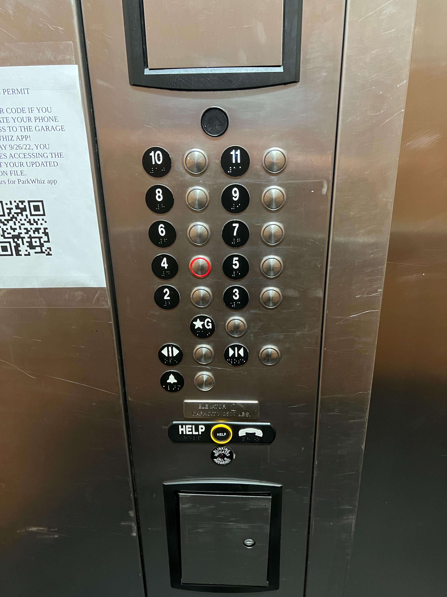
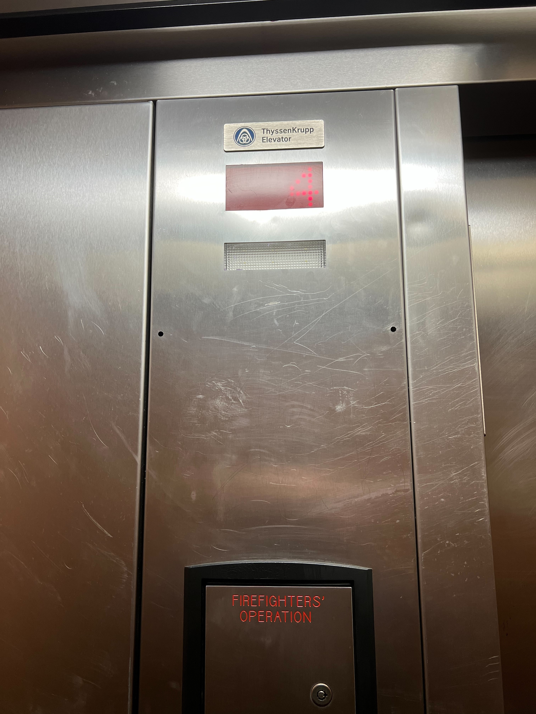
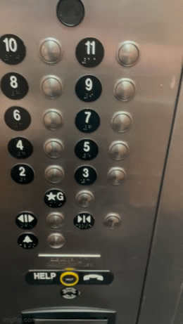
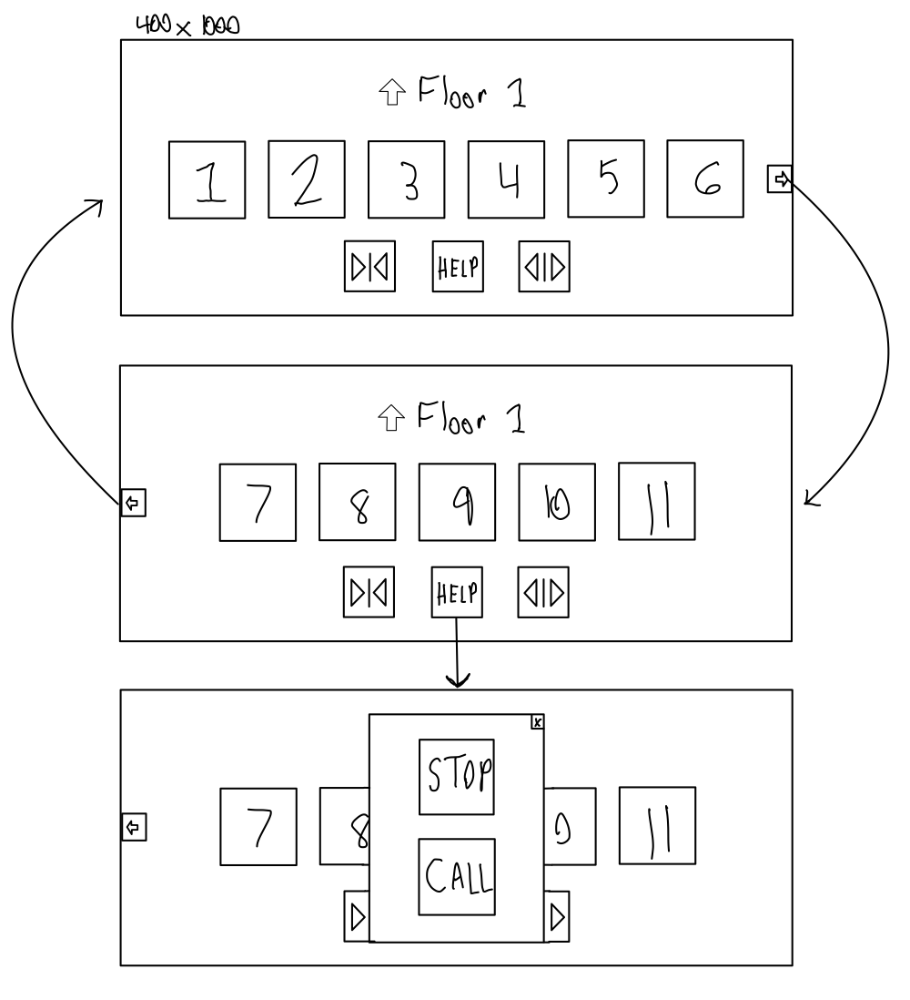
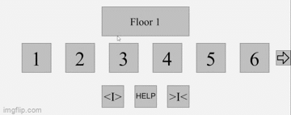

Project 1



For a C
- This interface overall only has a few flaws.
- For someone who is blind it may be hard for them to click the correct button.
- It would make more sence to change G to floor 1.
- The buttons should be arranged to only be in 2 rows without any being in the middle.
- Even with these flaws this interface is not that bad and works well with it's intended purpose.
For a B
- Elevator uses:
- Mainly used to help people travel between multiple levels in a building.
- A rare use case for users using the elevator would be a person with disabilities needing to use the elevator because they cannot climb stairs, or someone moving furniture up a multiple levels.
- The interface makes some of these tasks easy, but may be difficult for people that are in wheelchairs to use.
- Usually the user will call for a elevator, next they will select the desired floor on the interface, optionally the user can choose to close or open the elevator doors.
- Although there are no instructions on the elevator, the only options are to push the floor buttons in order to make it work.
- The elevator provides feedback by lighting up the button when pressed and making a chime noise when it reaches the desired floor.
- With this interface the most common mistake would be the user pressing the wrong floor button.
- A easy solution to fixing any confusion is to put the numbers and braille markings on each button for its corresponding floor. The orientation of the buttons should be changed to only be in the two rows to make it more visually appealing.
- Below is the sketch of a optimized version of a touch screen version of the control panel:

For an A
- The touch screen version will be around 10-12 inches and will be similar to a phone or tablet held horizontally.
- Below is a processing project that would be a touchscreen design for the interface:

- On press the interface provides feedback to the user by changing colors for buttons, changing the floor number, and opening and closing separate tabs.
Extra Features
- This is designed to be easily accessible for users who are in a wheelchair as they can easily go between the different sets of floor numbers and not have to worry about reaching for a button that may be out of their reach.
Download Link
Github Repository